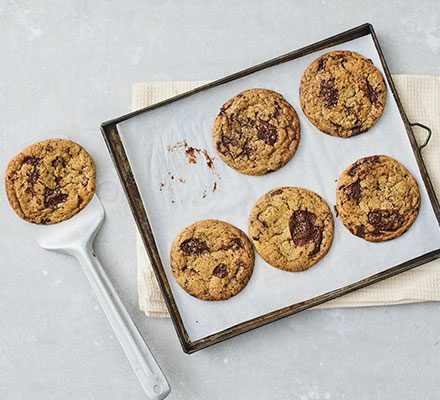

Vegan Chocolate Chip Cookies Recipe

Can you tell the difference?
Ingredients
- 125g cold coconut oil
- 100g golden caster sugar
- 150g light muscavdo sugar
- 125ml coconut milk
- 1 tsp vanilla extract
- 275g plain flour
- 1 tsp baking powder
- ¼ tsp bicarb
- 200g vegan chocolate chips or vegan chocolate, chopped into small chunks
Instructions
Step 1
- Tip the coconut oil and sugars into a bowl and whisk until completely combined, then whisk in the coconut milk and vanilla. Tip the flour, baking powder, bicarb and a good pinch of flaky sea salt into the mix to make a thick batter, then fold through the chocolate chips. Chill the batter for at least 1hr. Can be made two days ahead.
Step 2
- Heat the oven to 180C/160C fan/gas 4. Line a couple of baking sheets with baking parchment, then scoop or roll plum-sized balls of the dough and place them on the baking sheets about 2cm apart. Flatten ever so slightly and sprinkle with a bit more flaky salt if you want. Cook on the middle shelf for 12-15 mins, turning the tray once, until the cookies have spread and are golden but still soft in the middle. Leave to cool slightly, then lift the cookies onto a cooling rack while you bake another batch. Will keep in a biscuit jar for up to three days.
Picture and recipe courtesy of BBC Good Food
Back to Top | Go back